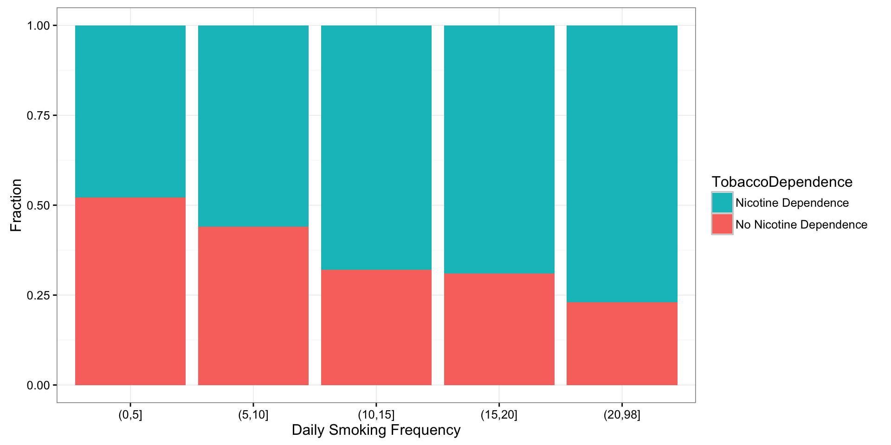

12.4 Post Hoc Tests
For post hoc tests following a Chi-Square, we use what is referred to as the Bonferroni Adjustment. Like the post hoc tests used in the context of ANOVA, this adjustment is used to counteract the problem of Type I Error that occurs when multiple comparisons are made. Following a Chi-Square test that includes an explanatory variable with 3 or more groups, we need to subset to each possible paired comparison. When interpreting these paired comparisons, rather than setting the \(\alpha\)-level (p-value) at 0.05, we divide 0.05 by the number of paired comparisons that we will be making. The result is our new \(\alpha\)-level (p-value). For example, if we have a significant Chi-Square when examining the association between number of cigarettes smoked per day (a 5 level categorical explanatory variable: 1-5 cigarettes; 6 -10 cigarettes; 11–15 cigarettes; 16-20 cigarettes; and >20) and nicotine dependence (a two level categorical response variable – yes vs. no), we will want to know which pairs of the 5 cigarette groups are different from one another with respect to rates of nicotine dependence.
In other words, we will make \(\binom{5}{2}=10\) comparisons (all possible comparisons). We will compare group 1 to 2; 1 to 3; 1 to 4; 1 to 5; 2 to 3; 2 to 4; 2 to 5; 3 to 4; 3 to 5; 4 to 5. When we evaluate the p-value for each of these post hoc chi-square tests, we will use 0.05/10 = 0.005 as our alpha. If the p-value is < 0.005 then we will reject the null hypothesis. If it is > 0.005, we will fail to reject the null hypothesis.
NT <- xtabs(~ TobaccoDependence + DCScat, data = nesarc)
NT DCScat
TobaccoDependence (0,5] (5,10] (10,15] (15,20] (20,98]
No Nicotine Dependence 130 210 43 114 20
Nicotine Dependence 119 267 91 254 67chisq.test(NT, correct = FALSE)
Pearson's Chi-squared test
data: NT
X-squared = 45.159, df = 4, p-value = 3.685e-09chisq.test(NT[, c(1, 2)], correct = FALSE)
Pearson's Chi-squared test
data: NT[, c(1, 2)]
X-squared = 4.4003, df = 1, p-value = 0.03593chisq.test(NT[, c(1, 3)], correct = FALSE)
Pearson's Chi-squared test
data: NT[, c(1, 3)]
X-squared = 14.238, df = 1, p-value = 0.000161chisq.test(NT[, c(1, 4)], correct = FALSE)
Pearson's Chi-squared test
data: NT[, c(1, 4)]
X-squared = 28, df = 1, p-value = 1.213e-07chisq.test(NT[, c(1, 5)], correct = FALSE)
Pearson's Chi-squared test
data: NT[, c(1, 5)]
X-squared = 22.275, df = 1, p-value = 2.362e-06chisq.test(NT[, c(2, 3)], correct = FALSE)
Pearson's Chi-squared test
data: NT[, c(2, 3)]
X-squared = 6.1426, df = 1, p-value = 0.0132chisq.test(NT[, c(2, 4)], correct = FALSE)
Pearson's Chi-squared test
data: NT[, c(2, 4)]
X-squared = 14.957, df = 1, p-value = 0.00011chisq.test(NT[, c(2, 5)], correct = FALSE)
Pearson's Chi-squared test
data: NT[, c(2, 5)]
X-squared = 13.483, df = 1, p-value = 0.0002407chisq.test(NT[, c(3, 4)], correct = FALSE)
Pearson's Chi-squared test
data: NT[, c(3, 4)]
X-squared = 0.056441, df = 1, p-value = 0.8122chisq.test(NT[, c(3, 5)], correct = FALSE)
Pearson's Chi-squared test
data: NT[, c(3, 5)]
X-squared = 2.1439, df = 1, p-value = 0.1431chisq.test(NT[, c(4, 5)], correct = FALSE)
Pearson's Chi-squared test
data: NT[, c(4, 5)]
X-squared = 2.1619, df = 1, p-value = 0.1415# OR
library(fifer)
chisq.post.hoc(NT, control = "bonferroni", popsInRows = FALSE)Adjusted p-values used the bonferroni method. comparison raw.p adj.p
1 (0,5] vs. (5,10] 0.0416 0.4159
2 (0,5] vs. (10,15] 0.0002 0.0016
3 (0,5] vs. (15,20] 0.0000 0.0000
4 (0,5] vs. (20,98] 0.0000 0.0000
5 (5,10] vs. (10,15] 0.0133 0.1328
6 (5,10] vs. (15,20] 0.0001 0.0012
7 (5,10] vs. (20,98] 0.0002 0.0021
8 (10,15] vs. (15,20] 0.8282 1.0000
9 (10,15] vs. (20,98] 0.1705 1.0000
10 (15,20] vs. (20,98] 0.1522 1.0000Chi Square Asssignment
Post syntax to your private GitHub repository used to run a Chi-Square Test along with corresponding output and a few sentences of interpretation.
Example of how to write results for Chi-Square tests:
When examining the association between lifetime major depression (categorical response) and past year nicotine dependence (categorical explanatory), a chi-square test of independence revealed that among daily, young adults smokers (my sample), those with past year nicotine dependence were more likely to have experienced major depression in their lifetime (36.17%) compared to those without past year nicotine dependence (12.67%), \(\chi^2=\) 88.6, 1 df, p < 0.0001.
T2 <- xtabs(~TobaccoDependence + MajorDepression, data = nesarc)
prop.table(T2, 1) MajorDepression
TobaccoDependence No Depression Yes Depression
No Nicotine Dependence 0.8733205 0.1266795
Nicotine Dependence 0.6382979 0.3617021chisq.test(T2, correct = FALSE)
Pearson's Chi-squared test
data: T2
X-squared = 88.598, df = 1, p-value < 2.2e-16Example of how to write post hoc Chi-Square results:
A Chi Square test of independence revealed that among daily, young adult smokers (my sample), number of cigarettes smoked per day (collapsed into 5 ordered categories) and past year nicotine dependence (binary categorical variable) were significantly associated, \(\chi^2\) = 45.16, 4 df, p < 0.0001. Post hoc comparisons of rates of nicotine dependence by pairs of cigarettes per day categories revealed that higher rates of nicotine dependence were seen among those smoking more cigarettes, up to 11 to 15 cigarettes per day. In comparison, prevalence of nicotine dependence was statistically similar among those groups smoking 10 to 15, 16 to 20, and > 20 cigarettes per day.
T3 <- xtabs(~TobaccoDependence + DCScat, data = nesarc)
T3 DCScat
TobaccoDependence (0,5] (5,10] (10,15] (15,20] (20,98]
No Nicotine Dependence 130 210 43 114 20
Nicotine Dependence 119 267 91 254 67prop.table(T3, 2) DCScat
TobaccoDependence (0,5] (5,10] (10,15] (15,20] (20,98]
No Nicotine Dependence 0.5220884 0.4402516 0.3208955 0.3097826 0.2298851
Nicotine Dependence 0.4779116 0.5597484 0.6791045 0.6902174 0.7701149library(ggplot2)
ggplot(data = nesarc[(!is.na(nesarc$TobaccoDependence) &
!is.na(nesarc$DCScat)), ],
aes(x = DCScat, fill = TobaccoDependence)) +
geom_bar(position = "fill") +
theme_bw() +
labs(x= "Daily Smoking Frequency", y = "Fraction") +
guides(fill = guide_legend(reverse = TRUE))
chisq.test(T3, correct = FALSE)
Pearson's Chi-squared test
data: T3
X-squared = 45.159, df = 4, p-value = 3.685e-09# Post hoc tests
chisq.test(T3[, c(1, 2)], correct = FALSE)
Pearson's Chi-squared test
data: T3[, c(1, 2)]
X-squared = 4.4003, df = 1, p-value = 0.03593chisq.test(T3[, c(1, 3)], correct = FALSE)
Pearson's Chi-squared test
data: T3[, c(1, 3)]
X-squared = 14.238, df = 1, p-value = 0.000161chisq.test(T3[, c(1, 4)], correct = FALSE)
Pearson's Chi-squared test
data: T3[, c(1, 4)]
X-squared = 28, df = 1, p-value = 1.213e-07chisq.test(T3[, c(1, 5)], correct = FALSE)
Pearson's Chi-squared test
data: T3[, c(1, 5)]
X-squared = 22.275, df = 1, p-value = 2.362e-06chisq.test(T3[, c(2, 3)], correct = FALSE)
Pearson's Chi-squared test
data: T3[, c(2, 3)]
X-squared = 6.1426, df = 1, p-value = 0.0132chisq.test(T3[, c(2, 4)], correct = FALSE)
Pearson's Chi-squared test
data: T3[, c(2, 4)]
X-squared = 14.957, df = 1, p-value = 0.00011chisq.test(T3[, c(2, 5)], correct = FALSE)
Pearson's Chi-squared test
data: T3[, c(2, 5)]
X-squared = 13.483, df = 1, p-value = 0.0002407chisq.test(T3[, c(3, 4)], correct = FALSE)
Pearson's Chi-squared test
data: T3[, c(3, 4)]
X-squared = 0.056441, df = 1, p-value = 0.8122chisq.test(T3[, c(3, 5)], correct = FALSE)
Pearson's Chi-squared test
data: T3[, c(3, 5)]
X-squared = 2.1439, df = 1, p-value = 0.1431chisq.test(T3[, c(4, 5)], correct = FALSE)
Pearson's Chi-squared test
data: T3[, c(4, 5)]
X-squared = 2.1619, df = 1, p-value = 0.1415